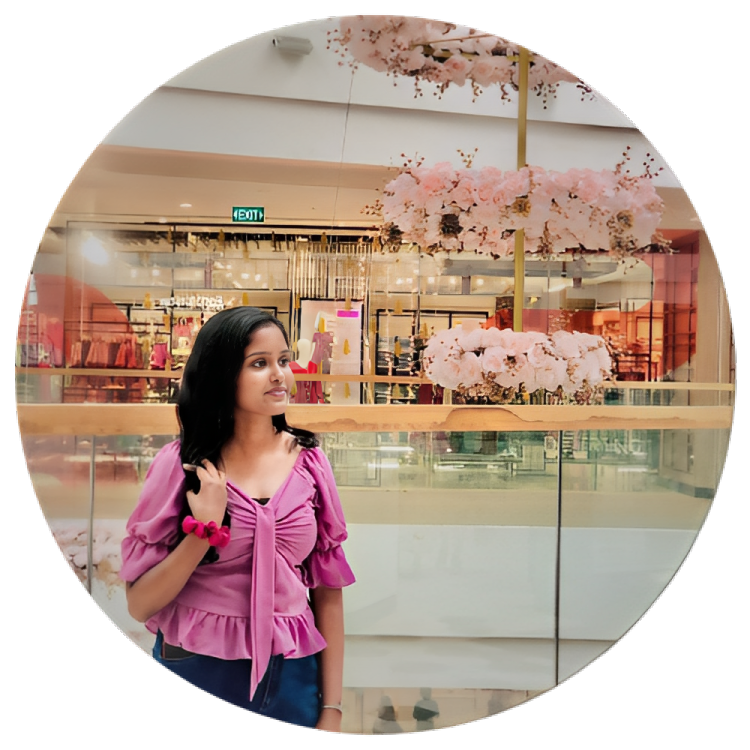

👋🏻 Hello, I am
A.P.Kannangara
Front-end DeveloperI'm Ashika Prasadi Kannangara,software engineering student at Sri Lanka Technological
Campus (2020-2024) at Sri Lanka.I started my coding journey in 2020.Currently I have
participated in several group-projects and I am particularly
interested in MERN stack.
I have a passion for creating innovative solutions that solve complex problems and
improve user experiences. I am constantly staying up-to-date with the latest
technologies and industry trends to
ensure that I am providing the most efficient and
effective solutions.
